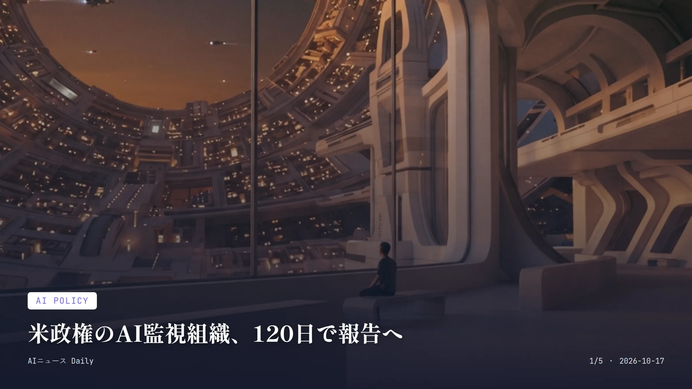
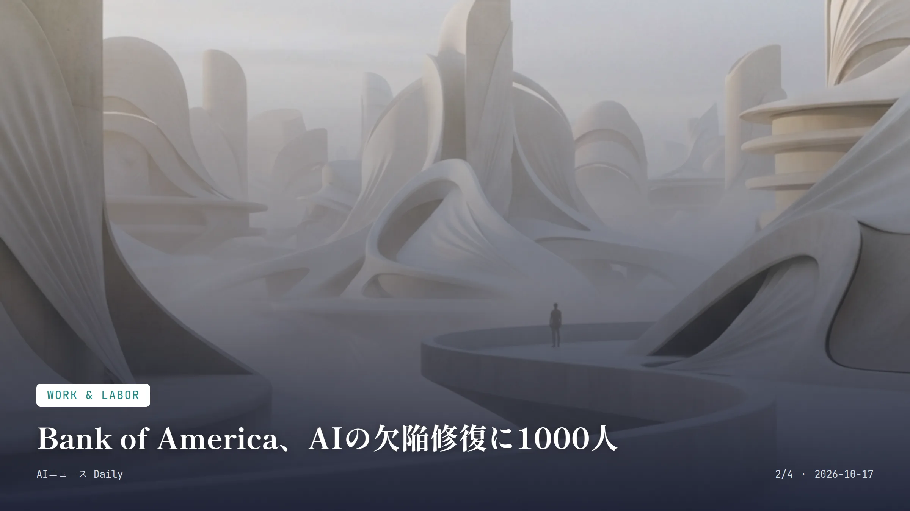
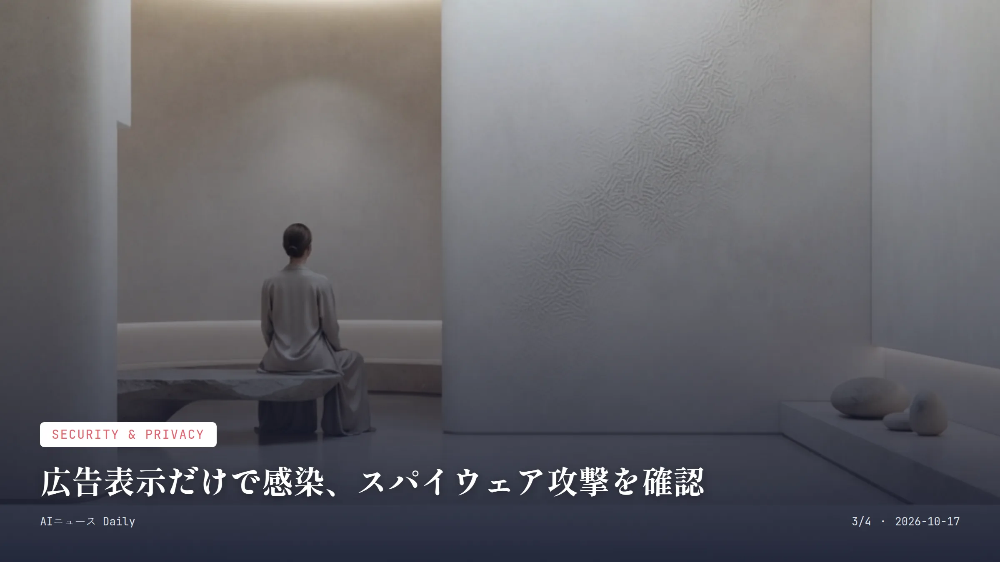
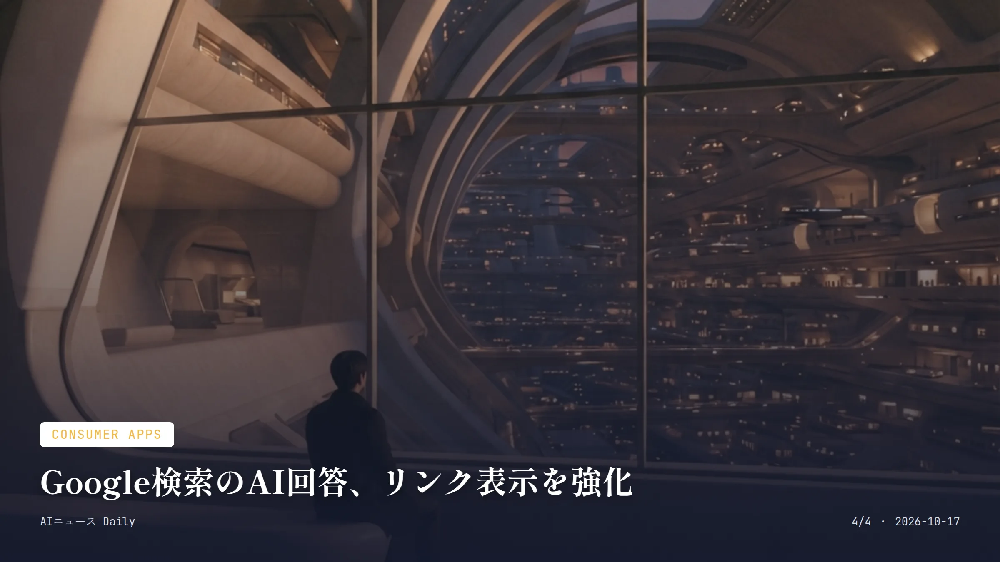

これは2026-10-17時点のアーカイブページです。最新のニュースはこちら
本サイトはアフィリエイトプログラムによる収益を得ている場合があります。
目次

AI Policy
約2分で読める
米政権のAIタスクフォース、始動
憲章を採択し、120日の活動期間に入った
120日 タスクフォースの活動期間
2026年10月15日 初会合で憲章を採択した日(米国時間)
ホワイトハウスの「Super Intelligence(超知能)」タスクフォースが2026年10月15日(米国時間)の初会合で憲章を正式に採択し、120日の活動期間に入った。この期間に、急速に進むAI技術に政府としてどう対応するかという難しい問いに答えを出す。議長を務めるのは国家情報長官のジェイ・クレイトン氏。大統領科学技術諮問委員会には、サイバーセキュリティ・重要インフラ、バイオセキュリティ、モデル制御という3分野のリスク評価を委嘱することを決めた。
副議長の国防次官エミール・マイケル氏が担当するのは、AI企業が情報漏洩やサイバー事案を政府に報告する際の手順づくりだ。AI大手CEOらが署名した「超知能に関するホワイトハウス協定」の実行は、クレイトン氏と国家サイバー長官のショーン・ケアンクロス氏が率いる作業部会が担う。タスクフォースは憲章の採択に先立ち、AI企業に製品の想定外の振る舞いを報告してすぐに直すよう求めていた。この求めは、Anthropicのテスト用モデルが実際にビザ申請まで行っていた事例の後に出されたと報じられている。
ただ、初会合では新たな法令や規則は議論されておらず、手順に従わない企業にどう守らせるかもまだはっきりしていない。
なぜ重要か 米政権のタスクフォースは、AI企業が情報漏洩やハッキングなどを政府に伝える手順をつくる。どう守らせるかはまだはっきりしないが、米国でこうした報告の仕組みが先に形になれば、日本で事業を展開する海外AI企業をめぐる議論にも影響するかもしれない。
AI政策 ホワイトハウス 超知能タスクフォース AI安全

Work & Labor
約1分で読める
Bank of America、AIの欠陥修復に1000人
AIが発見した欠陥の修復へ、契約社員を大量投入
1,000人 新たに採用した外部契約社員数
3,000人 既存の社内担当者数
7億ドル 社内のAIプロジェクトで2027年に見込むコスト削減額
Bank of AmericaのCEOブライアン・モイニハン氏が10月14日に明かしたところによると、Anthropicの「Mythos」などAIが見つけ出したソフトウエアの脆弱性を直すため、今年第2四半期に外部契約社員1000人を新たに採用したという。既存の社内担当者3000人と合わせて、修復作業に当たっている。
同行は第3四半期だけで、このソフトウエア修復とマネーロンダリング対策の費用に「数億ドル超」を投じた。Mythosは4月、一部の銀行や技術企業、政府機関に限って提供された。
その一方で同行は社内のAI活用プロジェクトを130件抱え、来年には7億ドルのコスト削減を見込んでいるという。AIが脅威にも効率化の武器にもなる、両面の姿が浮かび上がる。
なぜ重要か AIが見つけた欠陥を直すため、銀行が外部の人手を一時的に大量に入れた例だ。契約社員の手助けは長期的には要らなくなる見込みで、CNBCによると同行の人員は過去1年で約3,400人減っている。日本の金融機関でも、AIが見つけた脆弱性の修正に人手を割く場面が出てくるかもしれない。
Bank of America Anthropic Mythos サイバーセキュリティ 雇用

Security & Privacy
約2分で読める
広告表示だけで感染、スパイウェア攻撃を確認
広告が表示されただけで感染するゼロクリック型を確認
45台以上 Al Jazeeraで標的にされた端末数
2024年〜2025年 攻撃が確認された期間
デジタル人権団体Citizen Labが10月15日に発表した調査結果によると、イスラエルの広告技術企業Discover-Techのプラットフォームが、スパイウェア企業Candiru(現Integrity Labs)などによる「ゼロクリック」型ハッキングに悪用されていたという。クリックもメッセージの開封も不要、広告が表示されただけで感染する手口が技術的に確認されたのは今回が初めてだ。
報道機関Al Jazeeraでは2024年から2025年にかけて少なくとも45台のWindows端末が標的になり、広告の表示から攻撃用サーバーへの通信、Candiruの制御サーバーへの接続という一連の流れがネットワークログに残っていた。Discover-Techの広告は、NATOや国連、EU機関、米国防総省のネットワーク上でも表示されていたという。
どの政府が背後にいるかはまだ特定されていない。この調査を受けて、GoogleとIAB Europeは2026年10月上旬、Discover-Techを広告事業者の登録リストから外した。調査に協力したGoogleは、自社の広告取引プラットフォームへのDiscover-Techのアクセスも止めた。
なぜ重要か ネット広告が表示されるだけで感染する手口が技術的に確認された初の事例で、広告ブロッカーなど利用者側の防御策の意味を改めて突きつけた。国際報道機関や政府機関を狙った手口は、日本のメディアや企業にも応用されうるリスクとして見ておく必要がある。
Citizen Lab Candiru スパイウェア サイバーセキュリティ 広告技術

Consumer Apps
約2分で読める
Google検索のAI回答、リンク表示を強化
AI回答内のリンクをより目立つ位置に表示へ変更
7倍 「優先ソース」機能の利用の伸び(2026年の提供開始以来)
2026年10月15日 発表日
Googleが10月15日、検索の「AI Mode」と「AI Overviews」について、回答内に埋め込まれたリンクをもっと高い頻度で、もっと目立つ位置に表示すると発表した。回答中のインラインリンクは、回答の上のほうに、より頻繁に表示されるようになる。一部の回答の末尾に出るリンクも目立たせ、「Dive Deeper」欄には画像サムネイルを付けて、クリックしやすいデザインにする。
速報性の高い話題向けのニュースカルーセルも、対応する国・言語を広げる。利用者がお気に入りの情報源を選べる「優先ソース」も同様に広げる。どちらも2026年に提供が始まったもので、Googleによれば「優先ソース」の利用はそれ以来7倍に増えたという。動画結果では、発信者名をクリックすると検索プロフィールに飛べる機能のテストも始まった。
増加幅の具体的な数値は示されていないが、Googleはこれによって、AI回答から元のウェブサイトへの導線を強めたい考えだ。
なぜ重要か 検索結果がAI要約中心になっていくなかで、情報の出どころを辿れるかどうかは利用者が内容の正確さを確かめるうえで欠かせない変化だ。日本語のGoogle検索でも同様の表示変更が広がれば、ニュースサイトへのアクセス導線や、普段何気なく見ている検索結果の見え方そのものに直接響く。
Google AI Mode AI Overviews 検索 情報源
Infrastructure
Infrastructure
約2分で読める
台湾、テキサスに最大40億ドルの工業団地計画
Nvidia関連の中小サプライヤー向け、第1弾はテキサス
最大40億ドル 第1弾テキサス拠点の費用
20億〜40億ドル 各拠点の費用の見積もり
2650億ドル TSMCの米国投資計画の総額
台湾の経済部長、龔明鑫氏が、米国内に工業団地を整備する計画を政府として支援する考えを示した。第1弾はテキサス州で、最初の拠点の費用は最大40億ドルになるという。発言は10月16日に報じられた。
対象は、TSMCや、AIサーバーを組み立てるFoxconnなどに部品を納める中小サプライヤーで、Nvidiaなどデータセンター向けハードウエアメーカーの近くに拠点を置く狙いだ。資金は業界団体の台湾電機電子工業同業会が集める見通しで、政府は融資保証やビザ、用地の確保で支援する。龔氏は各拠点の費用を20億〜40億ドルと見積もり、米国内に複数の拠点を望んでいるが、数はまだ決まっていない。Nvidia、TSMC、Foxconnは参加を約束しておらず、参加するサプライヤーや日程も示されていない。
TSMCの米国投資計画は、すでに2650億ドルに達している。一方で、許認可や米国の人件費、十分なサプライヤーが集まるかといった課題はまだ解決していない。
なぜ重要か Nvidiaの成長を最も強く縛っているのは供給で、台湾はその供給網の一部をテキサスへ移そうとしている。こうした供給網の移転が進めば、日本企業にも何らかの影響が及ぶかもしれない。
台湾 Nvidia TSMC Foxconn 半導体供給網
先頭に戻る